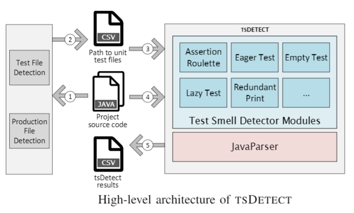

tsDetect is implemented as an open-source, command line-based tool that is available as a standalone Java jar file. By providing tsDetect as a self-contained executable file rather than a plugin (which is part of our future work), users are not required to have a specific Integrated Development Environment (IDE) installed on their machine in order to detect smells in their test code. Similar to other code smell and defect detection tools such as PMD and FindBugs, offering tsDetect as an executable through the command line facilitates its integration with modern continuous integration frameworks, as well as its adoption in mining software repositories and empirical studies in software engineering.
In addition to the tsDetect detection mechanism, we incorporate supplementary modules to automate the entire detection workflow. These modules support the detection process by parsing the input source files to detect unit test files (and their corresponding production files) in the project hierarchy. A high-level overview of the architecture of tsDetect is depicted in the below figure. In (1) and (2), the test and production files are identified from the project structure. In (3) and (4) tsDetect checks if the test files exhibits test smells. In (5), the results from the test smell detection process are saved. In the following subsections, we describe the test smell detector as well as the mechanism for distinguishing test files and their corresponding production files.

We followed a strategy design pattern in implementing the detection mechanism for test smells. Each smell is implemented and runs independently of other smells. The detection strategy of each smell type is self-contained within its own module. This design pattern also enables the seamless addition of new smell detectors in the future. Internally, tsDetect initially calls the JavaParser library to parse the source code files. JavaParser builds an AST from the unit test file that is under analysis. The AST is then analyzed by each of the available smell detection modules based on the pre-defined detection rules. Depending on the type of smell being detected, we override the appropriate visit() method to perform the detection. For example, in the case of detecting the Redundant Print smell, we first create a MethodDeclaration visitor to identify all test methods in the class. Next, for each detected test method, we create a MethodCallExpr visitor to examine the methods being called within the test method. Finally, for each called method, we check if the name of the method matches a standard Java print method to determine if the file is smelly.
On completion, results are saved into a Comma-Separated Values (CSV) file. For each smell type, tsDetect outputs a boolean value indicating if the smell is present or not in the file. We decided on a CSV format for output as this format is technology independent and permits users to import the data into a database system of their choice to ease the analysis process.
JUnit recommends that developers follow the naming convention of either pre-pending or appending the word `Test' to the name of the production file that is to be tested (i.e., Test*.java and *Test.java). Our tool first identifies all `.java' files where the filename either starts or ends with the word `test'. Next, for each of the identified Java source files, the tool parses its AST using JavaParser. The purpose of using the AST is twofold. First, we are able to eliminate Java files that contain syntax errors, and secondly, we are able to accurately detect if the file contained JUnit-based unit test methods. For a file to contain a unit test method, the method should have a public access modifier, and either has an annotation called @Test (JUnit 4) or the method name should start with `test' (JUnit 3).
In order to detect some test smells, e.g. Eager Test and Lazy Test, the production file associated with the unit test file is required. To identify the production file, we explore the project structure to search for files that have the same name as the test file, but without the word `test'. Next, for each production file we identified, the tool generates its corresponding AST to ensure that the file is syntactically correct.